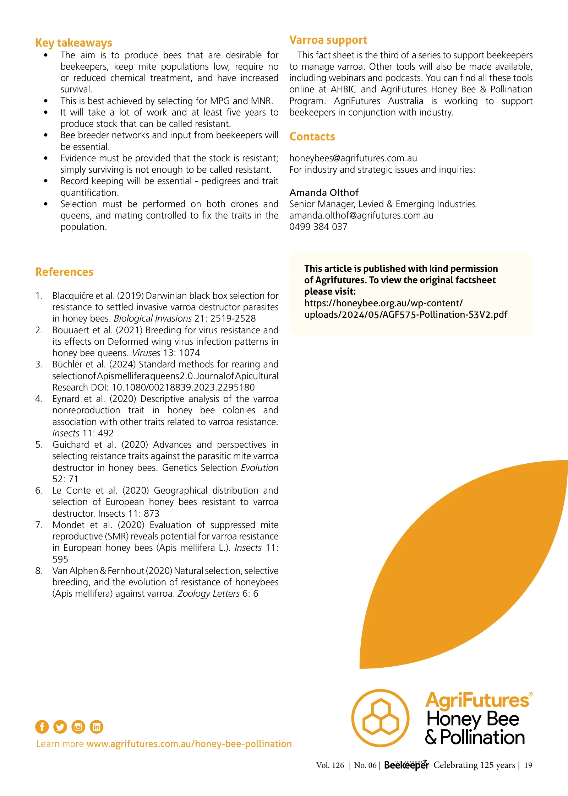

This article is published with kind permission
of Agrifutures. To view the original factsheet
please visit:
https://honeybee.org.au/wp-content/
uploads/2024/05/AGF575-Pollination-S3V2.pdf
Varroa support
This fact sheet is the third of a series to support beekeepers
to manage varroa. Other tools will also be made available,
including webinars and podcasts. You can find all these tools
online at AHBIC and AgriFutures Honey Bee & Pollination
Program. AgriFutures Australia is working to support
beekeepers in conjunction with industry.
Contacts
honeybees@agrifutures.com.au
For industry and strategic issues and inquiries:
Amanda Olthof
Senior Manager, Levied & Emerging Industries
amanda.olthof@agrifutures.com.au
0499 384 037
Learn more www.agrifutures.com.au/honey-bee-pollination
References
1. Blacquière et al. (2019) Darwinian black box selection for
resistance to settled invasive varroa destructor parasites
in honey bees. Biological Invasions 21: 2519-2528
2. Bouuaert et al. (2021) Breeding for virus resistance and
its effects on Deformed wing virus infection patterns in
honey bee queens. Viruses 13: 1074
3. Büchler et al. (2024) Standard methods for rearing and
selectionof Apis mellifera queens 2.0. Journal of Apicultural
Research DOI: 10.1080/00218839.2023.2295180
4. Eynard et al. (2020) Descriptive analysis of the varroa
nonreproduction trait in honey bee colonies and
association with other traits related to varroa resistance.
Insects 11: 492
5. Guichard et al. (2020) Advances and perspectives in
selecting reistance traits against the parasitic mite varroa
destructor in honey bees. Genetics Selection Evolution
52: 71
6. Le Conte et al. (2020) Geographical distribution and
selection of European honey bees resistant to varroa
destructor. Insects 11: 873
7. Mondet et al. (2020) Evaluation of suppressed mite
reproductive (SMR) reveals potential for varroa resistance
in European honey bees (Apis mellifera L.). Insects 11:
595
8. Van Alphen & Fernhout (2020) Natural selection, selective
breeding, and the evolution of resistance of honeybees
(Apis mellifera) against varroa. Zoology Letters 6: 6
Key takeaways
•
The aim is to produce bees that are desirable for
beekeepers, keep mite populations low, require no
or reduced chemical treatment, and have increased
survival.
•
This is best achieved by selecting for MPG and MNR.
•
It will take a lot of work and at least five years to
produce stock that can be called resistant.
•
Bee breeder networks and input from beekeepers will
be essential.
•
Evidence must be provided that the stock is resistant;
simply surviving is not enough to be called resistant.
•
Record keeping will be essential - pedigrees and trait
quantification.
•
Selection must be performed on both drones and
queens, and mating controlled to fix the traits in the
population.
Vol. 126 | No. 06 |
Celebrating 125 years | 19